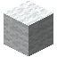
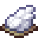

Reference: pages
Reference
Swivel Chair
encodedlogistics:swivel_chair · Block · Stacks to 64 · Creative tab: Encoded Logistics
A chair to sit on at your desk: it turns with you, and you sneak to get up. Dye it in a crafting grid.
Swivel Chair
Shift: Sit on it; it turns with you. Dye it in a crafting grid.
Works with
How to get it

encodedlogistics:swivel_chair

Dyes tint the Swivel Chair's fabric, and several dyes mix as they do on leather armour.
encodedlogistics:swivel_chair_dyed
Used to make
Nothing.
As a block
| Hardness | 1 |
|---|---|
| Blast resistance | 1 |
| Tool | any axe |
| Light level | 0 in its default state |
Tags
Where it's documented
- Terminal Desk and Swivel Chair (Terminals and access)